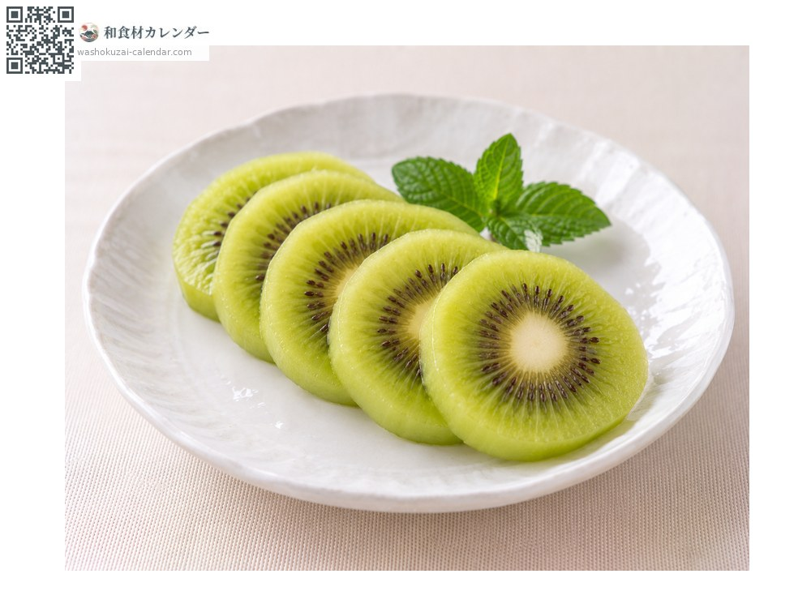
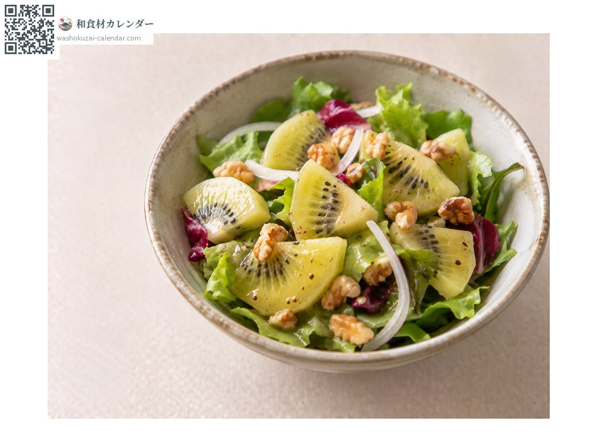
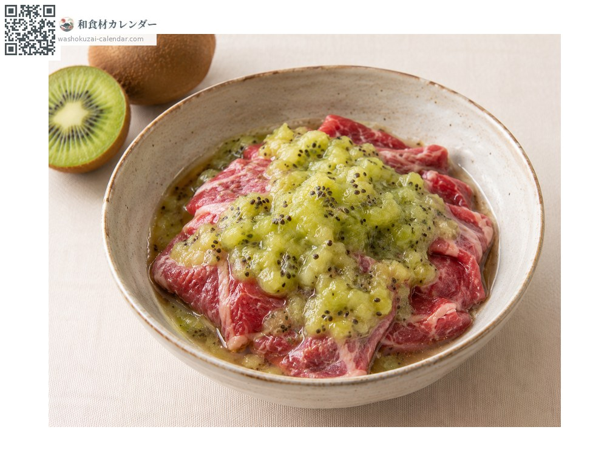
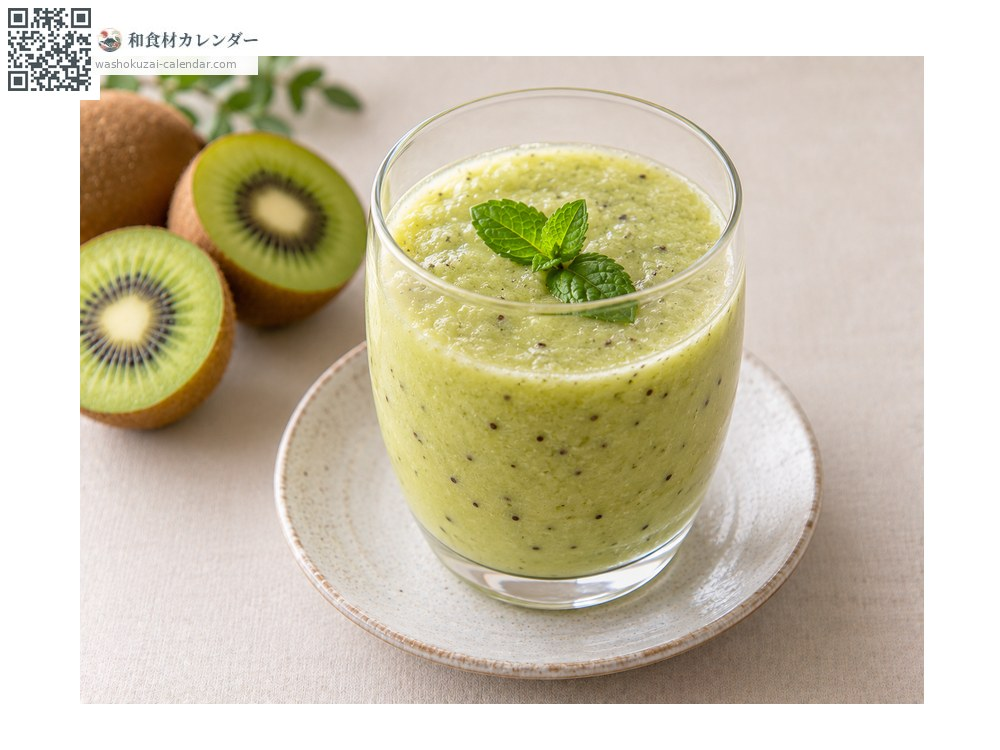

果物
キウイ
きうい
別名・別表記キウイフルーツ
旬は1月・2月・3月・12月

旬の時期
1月
2月
3月
4月
5月
6月
7月
8月
9月
10月
11月
12月
旬出回り
調理法

そのまま
半分に切ってスプーンで。

サラダ
酸味を活かして。

肉の下ごしらえ
すりおろすと肉が柔らかくなる。

スムージー
牛乳やヨーグルトと。
選び方
産毛が均一で、持って軽く弾力があるもの。硬いものは未熟。
保存方法
硬いものはりんごと一緒に袋に入れると追熟が早まる。柔らかくなったら冷蔵。
主な産地
豆知識
国産は冬から春が旬。追熟が必要な果物で、購入時に硬い場合は常温で置く。